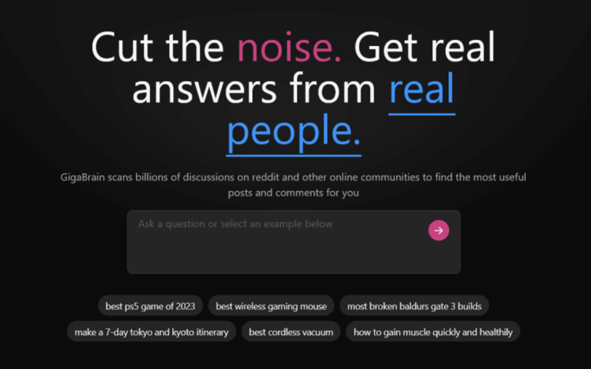

Discover the Latest AI Tools to Enhance Your Work
For Conversation
Try Poe. Poe allows you to chat with multiple AI assistants like ChatGPT, Claude, and others all in one place. You can get fast, helpful responses from powerful language models without having to switch between different apps or websites. Poe makes conversational AI more accessible and seamless.

Want to Stay on Top of Trends?
Check out Glimpse. Glimpse analyzes search data to surface trends before they become mainstream. Discover what's gaining popularity and driving consumer interest. With insights into topics across various categories, it's a useful tool for market research, product strategy, and investing.

To Get a Sense of What People in Certain Communities Might Be Interested In
Give Anthropic's SayIt a try. SayIt recommends related subreddits based on your post history. It can expose you to new discussions that align with your interests while helping expand your online circles.

For Analyzing Reddit Data at a Deeper Level
SubredditStats is a treasure trove (subredditstats.com). It provides rankings, stats, and comparisons across different metrics for every subreddit. Find under-the-radar communities worth exploring or track the growth of popular forums. Perfect for power users of the site.
Finally, Check Out GigaBrain for Advanced Search of Online Discussions
GigaBrain scans Reddit, forums, and more to surface the most useful comments on any topic. It automatically threads information together and cites sources. Great for quickly getting expert perspectives without sifting through everything yourself.
Conclusion
These are just a handful of innovative AI tools released recently. Stay tuned for even more that make productivity, learning, and discovery more seamless. The integration of AI into our tools and services is only beginning.